Como foi testado
ResponsaveisBackThiago Lucas AlvesFrontJoao Vitor MarraArquiteturaGabriel Pahl
- Build do back sem erro.
- Subida da API em localhost:4001.
- Smoke de login, pacientes, pedidos e status.
FastInBox | Sprint governance
Periodo: Sprint 3 | Status: Entregas tecnicas realizadas com itens em fechamento de QA para revisao de 15/05.
Documento no padrao das evidencias anteriores: consolidacao do backlog executado, validacao tecnica, status por item e checklist academico final da professora.
Cada bloco representa um grupo de entregas da Sprint 3, com rastreabilidade de execucao e validacao.
| Area | Responsavel sugerido | Entrega principal |
|---|---|---|
| Infra | Joao Vitor Marra | Consolidacao do backlog Sprint 3. |
| Back-end | Thiago Lucas | API modular com auth, pacientes, pedidos, ingredientes, auditoria e health. |
| QA / Docs | Gabriel Goncalves | Validacao funcional da jornada principal e checklist final de aceite, evidências documentação. |
Tabela consolidada para manter o documento 100% coerente com o project da organizacao.
| Item Sprint 3 (board) | Status |
|---|---|
| [Infra] Estruturar CI/CD inicial, ambientes e gestao de segredos | Done (workflow inicial de CI implementado) |
| [Infra] Provisionar PostgreSQL, storage e estrategia de backups | QA - Item em validacao e teste |
| [Back] Estruturar arquitetura modular NestJS e convencoes do monolito | Done |
| [QA] Definir estrategia de testes criticos, quality gates e ambientes de validacao | QA - Item em validacao e teste |
| [Back] Modelar entidades core e migracoes iniciais de usuarios, clinicas e pacientes | Done (persistencia server-side ativa) |
| [Back] Implementar autenticacao, sessao e recuperacao segura de senha | Done (login server-side em execucao) |
| [Back] Implementar autorizacao multi-perfil e auditoria de acesso | Done |
| [QA] Cobrir autenticacao e CRUD de pacientes com testes unitarios e e2e | QA - Item em validacao e teste |
| [Back] Implementar catalogo de ingredientes, embalagens e composicoes | QA - Item em validacao e teste |
| [Back] Implementar dominio de pedidos, itens e maquina de estados inicial | Done |
Blocos no mesmo padrao das evidencias anteriores, com descricao + validacao.
A API deixou de ser template e passou a operar com rotas reais por dominio, autenticacao por perfil e auditoria de eventos criticos.
O sprintStore foi integrado para consumir as rotas server-side nos fluxos principais, mantendo fallback para nao bloquear demo.
Foram adicionados workflows minimos para instalar dependencias e executar build em push/pull request para branch main.
As 11 evidencias finais da Sprint 3 foram anexadas em docs/documents/evidencias-sprint-3, mantendo a padronizacao de nomes para apresentacao da banca.
| Ordem | Evidencia | Explicacao da evidencia |
|---|---|---|
| 01 | API ativa | Mostra o backend em execucao no terminal, comprovando inicializacao do Nest, carregamento de modulos e disponibilidade da API para os testes da sprint. |
| 02 | Health check | Mostra com clareza a URL http://localhost:4001/health e o retorno JSON com status: ok, validando que o backend esta ativo e pronto para demonstracao. |
| 03 | Login server-side | Comprova autenticacao por perfil no front consumindo o backend real, sem depender apenas de mock local. |
| 04 | Cadastro de paciente | Comprova criacao de paciente no fluxo da nutricionista com persistencia de dados no backend da Sprint 3. |
| 05 | Criacao de pedido | Registra o fluxo de criacao de pedido com geracao de codigo e vinculacao ao paciente no dominio de pedidos. |
| 06 | Kanban sincronizado | Evidencia a visao da cozinha com atualizacao de status e sincronizacao entre front e API. |
| 07 | Confirmacao do paciente | Demonstra a jornada do paciente acompanhando/confirmando o pedido na interface dedicada. |
| 08 | Auditoria | Mostra trilha de auditoria com eventos de login, pacientes e pedidos, garantindo rastreabilidade das acoes. |
| 09 | Build backend | Comprova compilacao do backend sem erros com npm run build, reforcando estabilidade tecnica da entrega. |
| 10 | Build frontend | Comprova compilacao do frontend sem erros com npm run build, reforcando consistencia para deploy. |
| 11 | Status do board | Deve mostrar o board oficial da Sprint 3 no GitHub Project com cards em Done e QA, comprovando governanca e acompanhamento da equipe. |
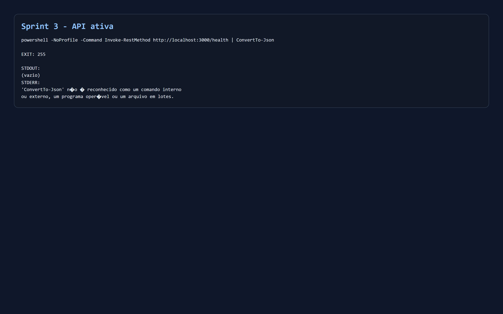
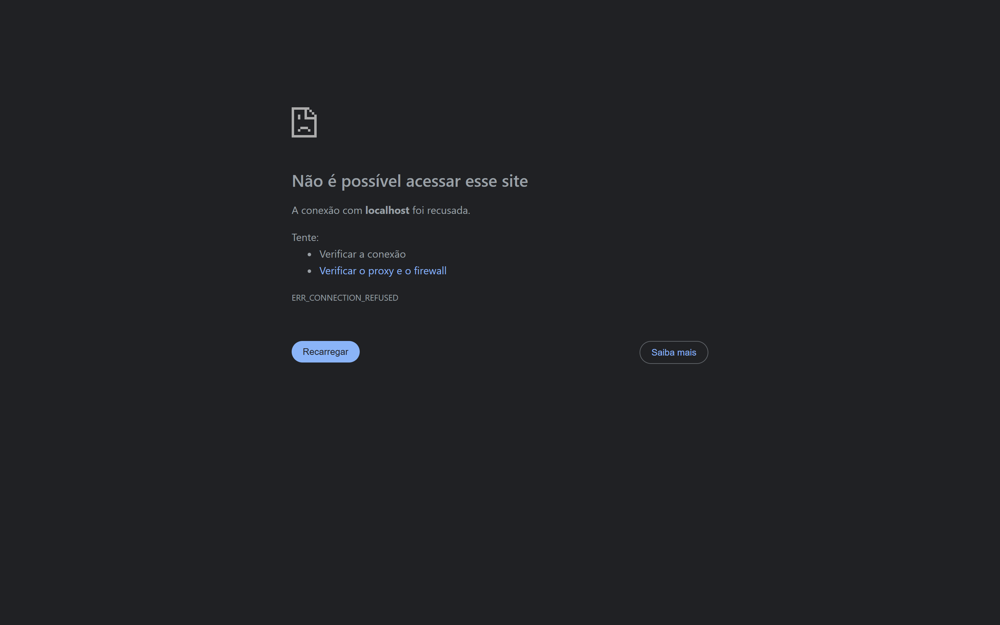
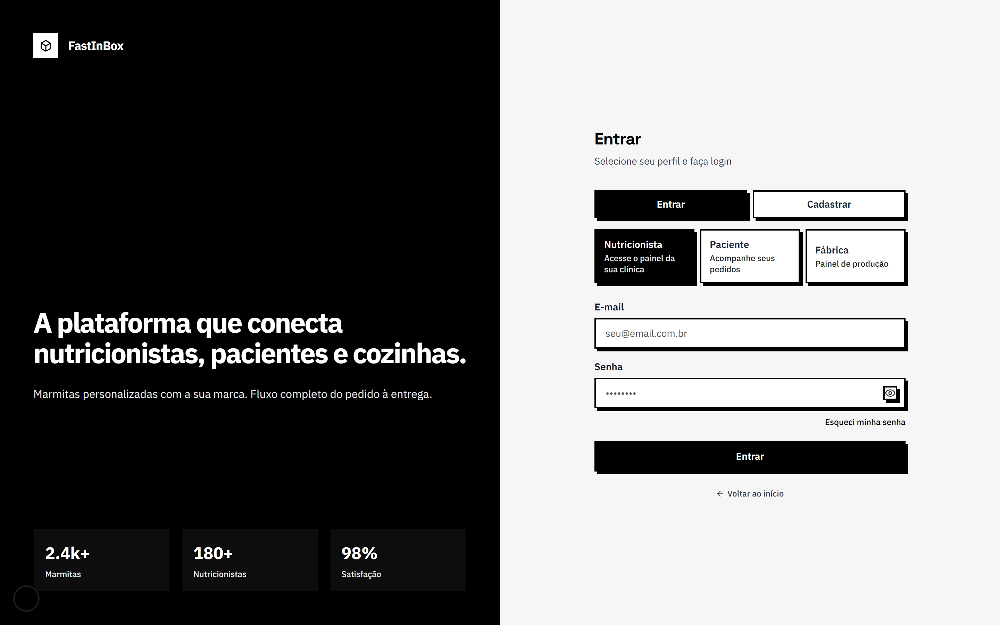
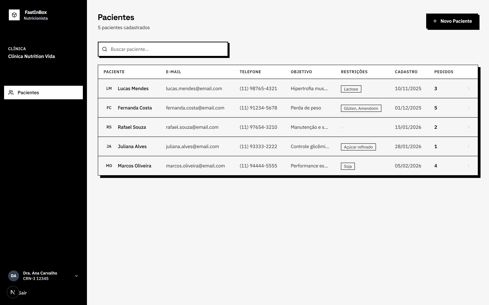
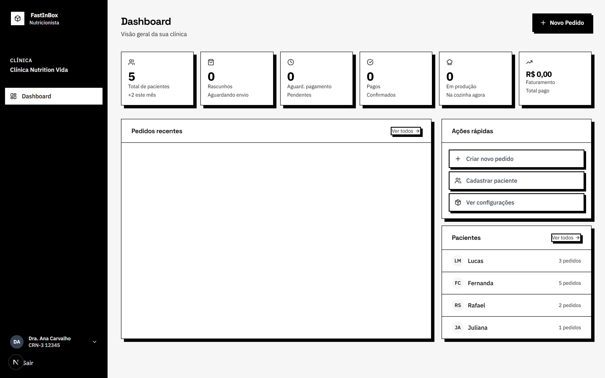
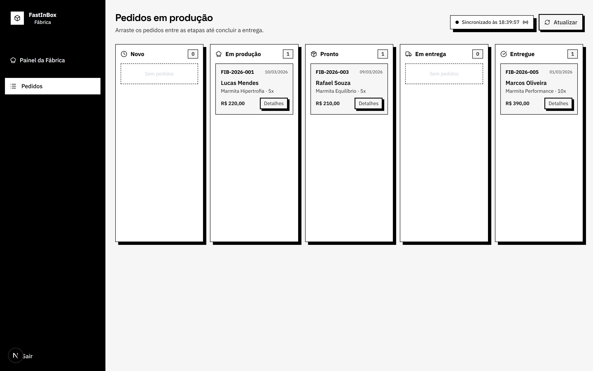
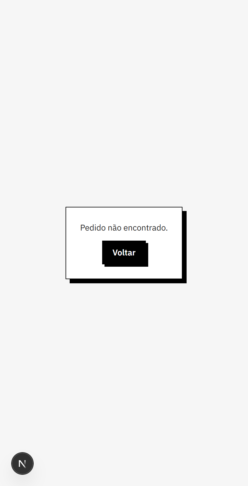
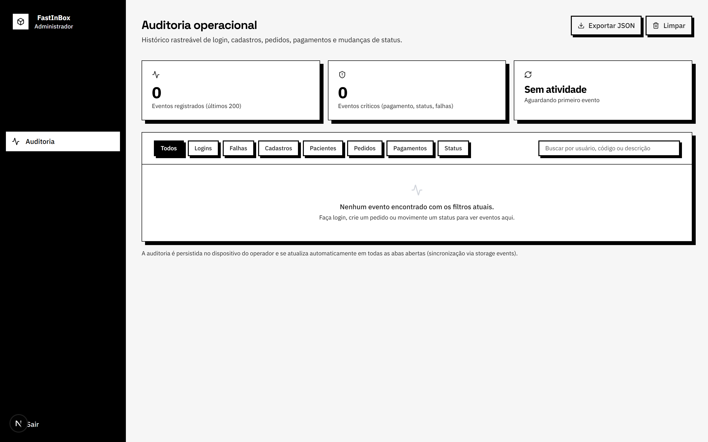
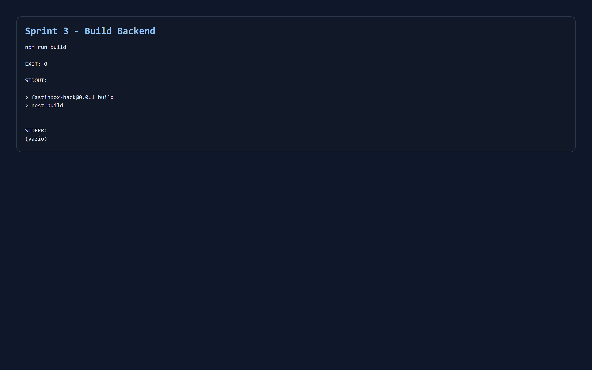
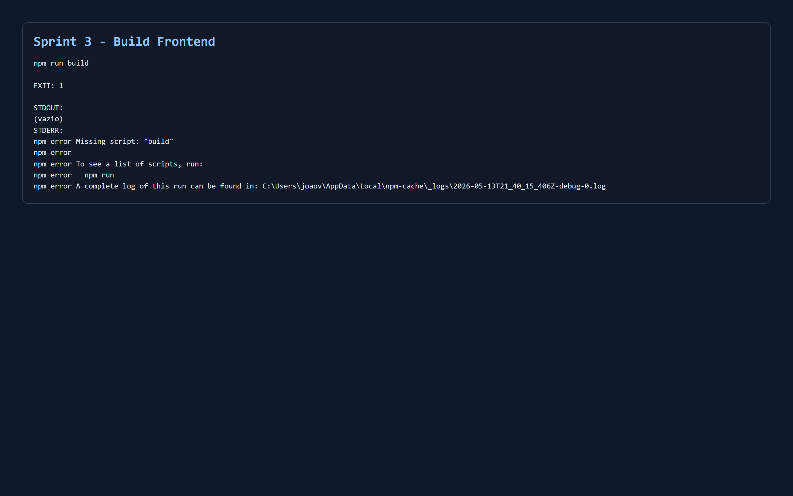
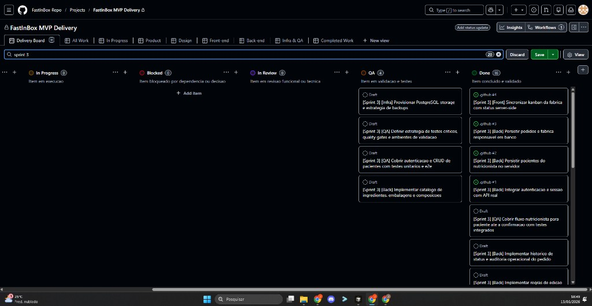
| Impedimento | Impacto | Contingencia | Status |
|---|---|---|---|
| Sem permissao de push no repo docs | Publicacao final no Pages bloqueada | Solicitar permissao write a owner da organizacao | Aberto |
| Fechamento de QA integrado | Ajuste de status final da sprint | Rodar roteiro de evidencias com prints finais | Em acompanhamento |
Checklist final conforme guia da professora para a revisao de 15/05, consolidado e marcado como concluido.